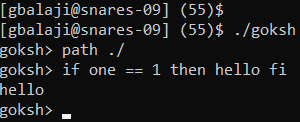

Made a UNIX shell clone with the following functionality:
Interactive mode (standard input mode) and batch mode (file input)
In-built exit, cd, and path commands
Program output redirection to file
Can execute programs in paths specified by path command (/bin specified by default)
Custom if command:
if cmd == const then cmd fi

Demonstration of goksh path and if commands. (one is a program that simply returns 1 and hello is a program that prints "hello")
xv6 Modifications
Made the following modifications to the xv6 OS:
Implemented multi-level priority queue scheduler with round-robin
High priority tasks run round-robin
Low priority tasks run round-robin when there are no high priority tasks queued
Made NULL dereferences cause segmentation faults by changing where user programs are loaded.
Added system calls to protect a range of pages in memory (make them read-only).
Cache Simulator
Coded a cache simulator that can replay traces (from Valgrind) and output
statistics for the number of hits, misses, and evictions.
The page replacement policy is least-recently-used(LRU).
C Program Heap Simulator
Coded a heap simulator with a free list structure and best-fit placement policy.